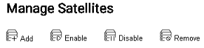
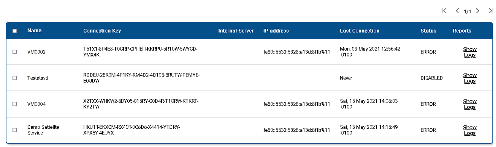
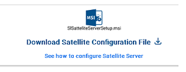

Sattelite Server Overview
EzCloud works with meta data collected from network folders on an on-premise server. The identification, collection, organization, and sending of data from the server to EZ2Cloud is performed with a component of EZ2Cloud whose name is Sattelite Server. This is an application that will be installed and run as a local Service and through specific configurations it is authorized to obtain the metadata and request its processing and registration with EZ2Cloud.
When referring to Sattelite Server we will be talking about the need to configure a Sattelite Server in Tenant. And then the actual installation of the application on a server. The reference that will be created is used in the application as part of the authorization process and will be used in the definition of a Project.When referring to Sattelite Server we will be talking about two different but also related steps:
- Manage Sattelite Server - Include task that refers to manage all the required data needed for the proper installition and operation of the application Sattelite Server
- Install a Sattelite Server - Steps that refers to installation of the application on a on-premise server.
Manage Satellite Server
Managing Sattelite Server data consists of defining the data elements that are required to use Sattelite Server in the context of EZ2Cloud. To access Satellite Server Management functionality from the Admin Menu, go to Settings. You will immediately see the window where you can perform the various actions available like Add New, Remove, Enable and Disable satellite server.
An example of the main view is shown in the following images.
- Action Area - The top of window contains button used to trigger the actions Add New, Remove, Enable and Disable satellite server. 
-
Sattelite Server Data - At the middle a table with the data that define Sattelite Server and information generated on their activity.  Here you will see:
- Name - Identifier and consists of a string of alphabetic characters that may contain spaces and additionally digits.
- Connection Key - A character string used in the application installation and configuration process.
- Internal Name - Fully Qualified Domain Name of the on-premise server running the Sattelite Server application
- IP Address - Server running the Sattelite Server application IP Address
- Last Connection - Date of the last connection to EZ2Cloud API from the application
- Status - After the last connection what is the current status of the application. Possible values will be: Enabled, Disabled, Error.
- Reports - Each Tenant Sattelite Server application send logs. This can be view by click Show Logs link in the Reprts column.
-
Download Area - At the bottom the Download area with a link to download the last stable version of the Sattelite Server application used in the setup process in a on-premise server 
Install Satellite Server
- Under settings, go to sattelite servers and there you can click on add as shown below:

- After that just follow the instructions as shown in the figure bellow:

And thats it! After that you have to wait at least one hour in order to finish the process.